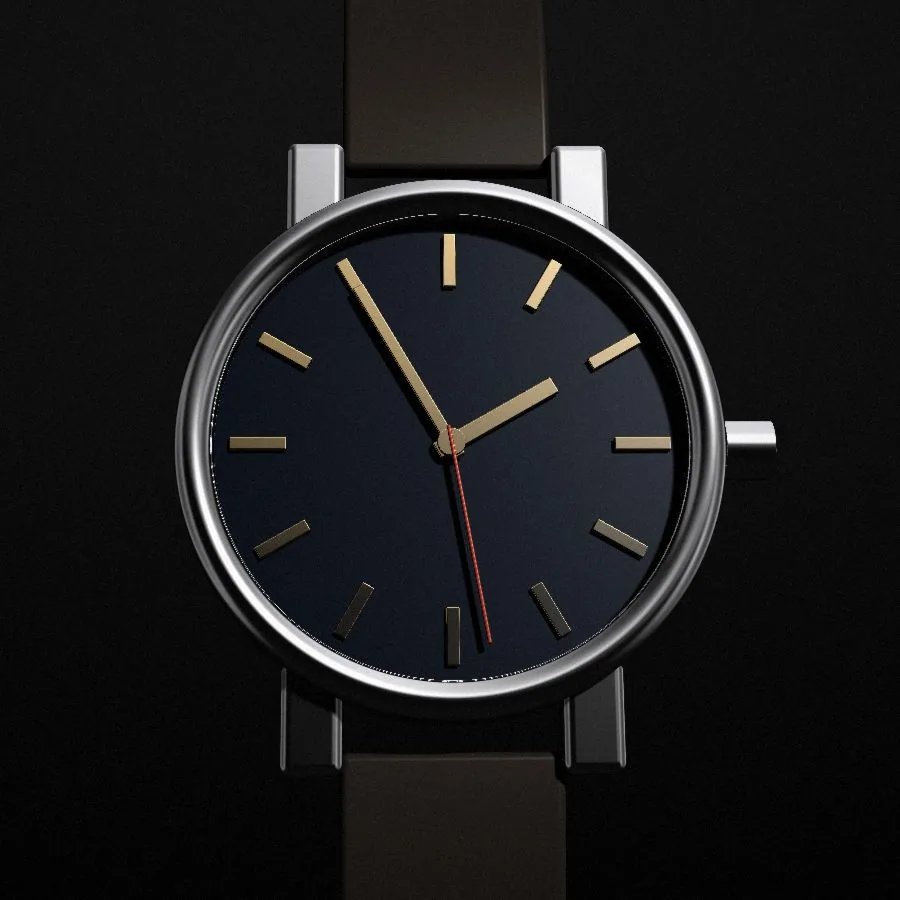

One watch, made by hand in the Jura. Thirty-eight millimetres of steel around a movement that a single watchmaker assembles, regulates and signs.
ScrollCalibre M1 · 38 mm21,600 vph · 60 h reserve
- Case38mmSteel, 9.8 mm high
- Reserve60hWound by hand, daily
- Depth100mScrew-down crown
- Beat21,600Vibrations an hour
- Output300Pieces a year, no more
(00) The manufacture
We make one watch. We make it three hundred times a year, at six benches in a farmhouse above Le Locle, and we have no plans to make it faster.
Meridian was founded in 2011 by two watchmakers and a case-maker who had spent their careers finishing other people’s names. It is independent, unlisted and in no particular hurry.
Meet the six benches(01)The object
Turned once, under north light.
Polished bezel, satin flanks, a crown you can grip with a fingernail. Scroll, and the Calibre M1 turns through 138 degrees.

- 01Crown
Signed and screw-down. About forty turns wind the full sixty hours.
- 02Sapphire
Domed, anti-reflective on the inside only, so the crystal never looks blue.
- 03Case
316L steel. Polished bezel, brushed flanks, 9.8 mm from crystal to back.
- 04Strap
Calfskin, 20 mm at the lugs, stitched by hand in Neuchâtel.

Chapter IThe case
Thirty-eight millimetres, and not one more.
The case is turned from a single bar of 316L steel and finished by hand in nine steps: polished on the bezel and lugs, satin-brushed on the flanks, with a chamfer between them no wider than a hair. At 38 mm it suits most wrists. At 9.8 mm it slides under a shirt cuff without catching.
- Diameter
- 38.0 mm
- Height
- 9.8 mm
- Lug to lug
- 45.5 mm
- Lug width
- 20 mm
- Finishing
- 9 steps
- Depth
- 100 m
Chapter IIThe movement
A calibre you wind with your own hand.
Calibre M1 is ours from the mainplate up: 142 components, 17 jewels, a balance beating at 3 Hz. No rotor, no date, nothing between you and the bridges. Wind it in the morning and it is still running on the evening of the third day.

- ABarrel60-hour mainspring
- BCentre wheelOnce an hour
- CThird wheelReduction
- DFourth wheelOnce a minute
- EEscape wheel15 teeth, Swiss lever
- FBalance3 Hz, free-sprung
Fig. 2The going train. The fourth wheel turns once a minute, as it does in the watch.

Chapter IIIThe dial
Eleven coats, one sunray.
Each dial begins as a brass blank. It is brushed in a sunray from the centre outwards, lacquered in eleven thin coats and fired between each. The indices are set by hand, one at a time, with a press calibrated to forty grams. Three colours. The calibre underneath does not change.

Chapter IVThe hands
Two hands on the dial. Two more behind it.
The baton hands are diamond-cut, gold-plated and set last, by eye and by loupe, so that nothing touches the lacquer. The other pair belongs to the watchmaker who assembled the calibre. They regulate it in five positions, let it run for twenty-one days, and engrave their initials under the barrel bridge before the caseback closes.
(05)The atelier
Signed where no one will look.
Six watchmakers, fifty movements each a year: roughly one a week. Whoever starts a calibre finishes it. Their initials go under the barrel bridge, where the only person likely to read them is the next watchmaker to open the case.
Barrel bridge, underside · perlageEngraved A.V.
(07)Beyond the watch